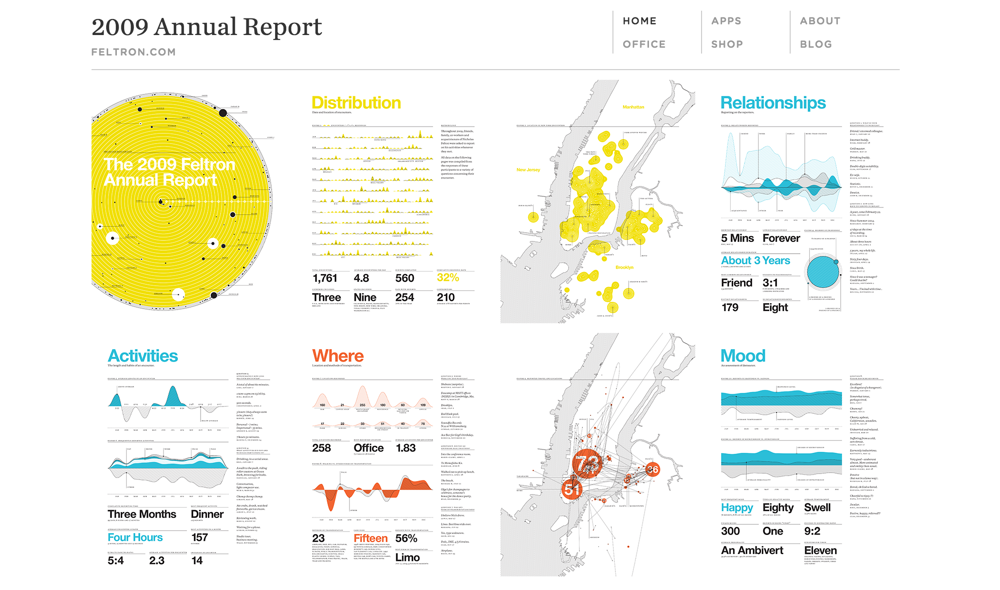

Nicholas Felton’s Annual Reports
- Observations from 2005: Felton uses Uses large scale distances to compare parallel to daily distances that adds together in a final total. In Books, he begins talking about categories like Best fiction, Best non-fiction, honorable mentions.
- Observations from 2006:He sets data categories that are pre-defined. He also gives opinions such as “best pulled-pork in manhattan”
- Observations from 2007: He records anomalies e.g. "Longest day of the year, 38 hours (Tokyo to NYC)”. There are 3 consistent categories (e.g. music, books), but the rest change from previous reports. Felton also starts playing with form (3D maps)
- Observations from 2009: Felton begins introducing other people into his calculations and focuses on quantifying all of his communication by asking others for opinions on their interactions with him. In this report, location is a large factor as well as maps to show where various instances occurred. In this way he anchors his memories points and the pathways to asist him in telling his story.
- Observations from 2010: Felton's father passes away this year and he takes data from his father's documents (passports, postcards and begins looking at data from someone else’s life, and lays it out in 10 pages. It not only tells a story of one man (his father) but about his generation based on his interactions with others (e.g. those in his form) and on historical events (e.g. wars)
- Observations from 2011: Felton adds PIE charts with comparisons, line graphs, bar graphs
- Observations from 2012: Felton uses reminders to remind him to fill out a SURVEY on his app, reporter. instead of recording one thing per entry, he was probably recording many at once. He begins looking at the bigger picture of what his data would represent for each individual in a mass population with Snowden’s revelation. The questions asked were: Where are you? Are you working? What are you doing? What tools are you using? Who are you with? What are you wearing? What are you eating or drinking? How productive were you today?
Finally, he not only used google calendar now as a planning tool, but as a recording tool - Observations from 2013: Felton records conversations. ALL OF THEM. (conversations, texts, telephone calls, email Facebook messages, physical mail). He records instances more on some days and less on other days, but adds a disclaimer in the beginning of the report. While conversations are thoroughly subjective, his report is thoroughly objective in which he only records things like location and conversation topic and lets his views make connections and assumptions. he includes observational data (which can be skewed) such as nonverbal etiquette. In order to record nonverbal greetings, he would have to DEFINE what his version of what nonverbal etiquette is. Could mean different things to different people.
- Observations from 2014: When traveling, Felton categorizes his data points by country (how many photos taken, average temp, unique locations.
Overall:
-Nicholas Felton says that his reports are not about optimization. Which then begs the question, WHY? Why do you need to know how many types of beer you’ve consumed or how many restaurants you’ve been to in a year if not for change?
-“I needed to see myself mirrored in them” - so basically, he needed to have an emotional connection. His reports are popular because people are curious and can see themselves in his reports too.